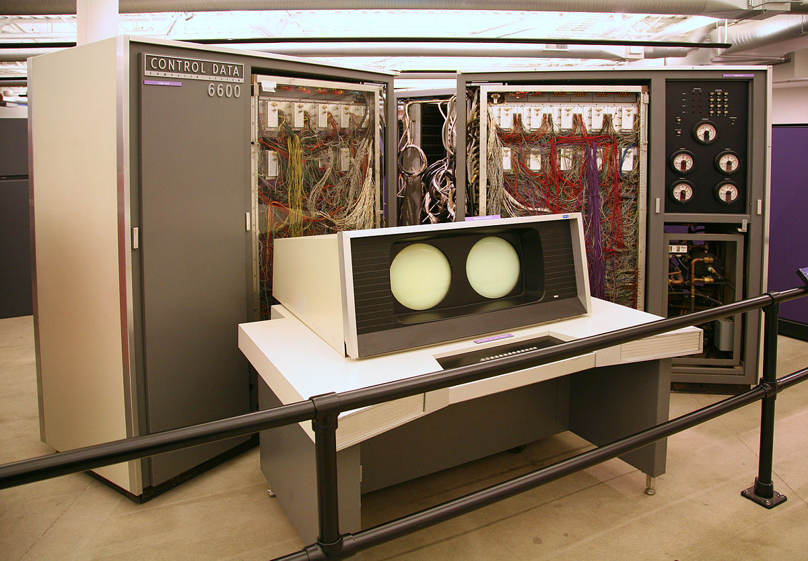

Scoreboarding Simulator
SSC0114 - Arquitetura de Computadores @ ICMC - Universidade de São Paulo.
Insira as instruções a serem escalonadas.
Descrição do Projeto
Simulação do algoritmo Scoreboarding para escalonamento de instruções em um pipeline, de forma centralizada,
apresentado pela Profa. Dra. Sarita Bruschi durante a disciplina de Arquitetura de Computadores - 2018/2.
A simulação foi feita em JavaScript, utilizando a biblioteca p5.js para visualização.
Todo o código roda no seu navegador. O site está hospedado utilizando Github Pages.
O editor de texto aceita código em Assembly MIPS.
ATENÇÃO: não funciona em dispositivos móveis. Em certos tablets pode funcionar.
O motivo é conhecido mas não será revelado por questões de dignidade.
A estética do projeto busca referenciar as cores e estilo dos equipamentos da época (1960-1970),
computadores e mainframes enormes porém com fachadas e terminais bem coloridos.
Há também um pequeno toque do clássico estilo de sites de professores ao redor do mundo.
O Scoreboarding foi utilizado no mainframe CDC 6600, lançado em 1964. Foi o primeiro computador a ser designado como "supercomputador".
Referências:
- Hennessy, J. L., & Patterson, D. A. (2019). Computer architecture: A quantitative approach. Cambridge (Mass.): Elsevier.
- Fotos por 'Docubyte', J. B. (n.d.). Classic Computers. http://www.docubyte.co.uk/
- Tong, Allan. “Dynamic Scheduling - Scoreboard.” Research Areas | UMD Department of Computer Science, www.cs.umd.edu/users/meesh/411/website/projects/dynamic/scoreboard.html.